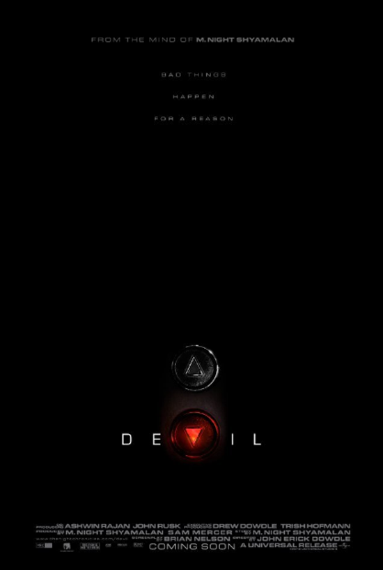

부정기적으로 생각날때마다 써보는
최근 본 영화 시리즈(?) 입니다 ^^
곡성
개봉하자마자 동생곰이랑 용산 CGV서 봤음
정신없이 몰입해서 보고
영화 끝나자마자 제가 한말은 '네이버지식인!' 이었습니다. ㅋㅋㅋ
영화본다음 정신없이 후기찾아 보고 동생곰이랑도 한참 떠들었네욤
개인적으로는 잼나게 봤습니다. 런던 한국영화제에 이작품 안 올려나? 해외반응이 궁금합니다.
시니스터
이것도 잼나게 봤어요. 별 세개정도
예측가능한 결말이 좀 아쉽습니다. :p
컨저링
이건 두번째 관람.
여전히 잼나게 봤습니다. 애나벨도 보고싶네용.
몰입도는 훈늉합니다. 그러고보니 컨저링2도 나왔군용;;
다크섀도우
에바그린!! 머시써

데블
찾아보니 2010년도 영화군요.
감상은
악마가 참 착하네잉...
죄있는사람 엘레베이터에 몰아놓고 그러면 안된다고 가르쳐주는건가 싶었습니다
나같음 무고한 사람 랜덤으로 가둬서 억울하지? 이게 세상이다~ 이랬을텐데...뭐 이런 잡생각을 ^^;;;
스토리, 흐름 전부 괜찮아요. 평점은 별 세개반 정도 :3
마음에 든 대사
"I don't believe in the Devil. We don't need him. People are bad enough by themselves."
시간날때마다 호러필름 찾아보고 있는데.
별 네개짜리를 보고싶습니당.